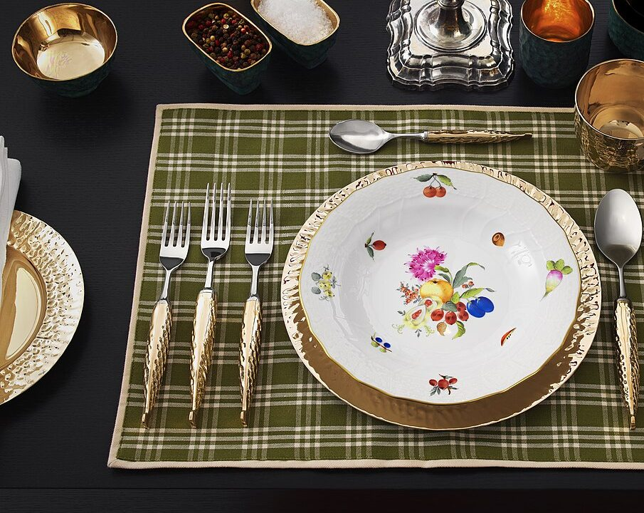
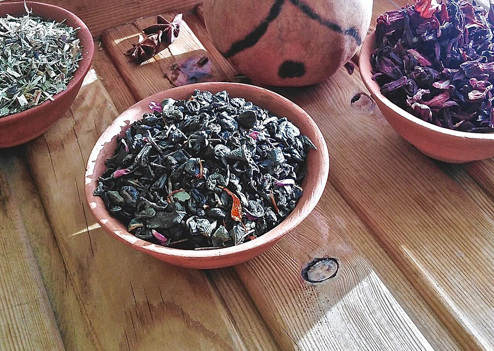
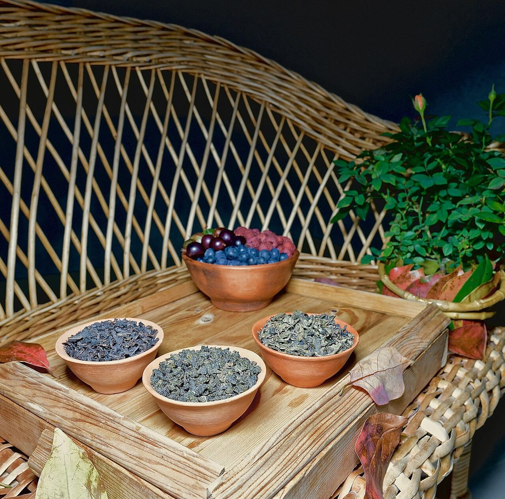
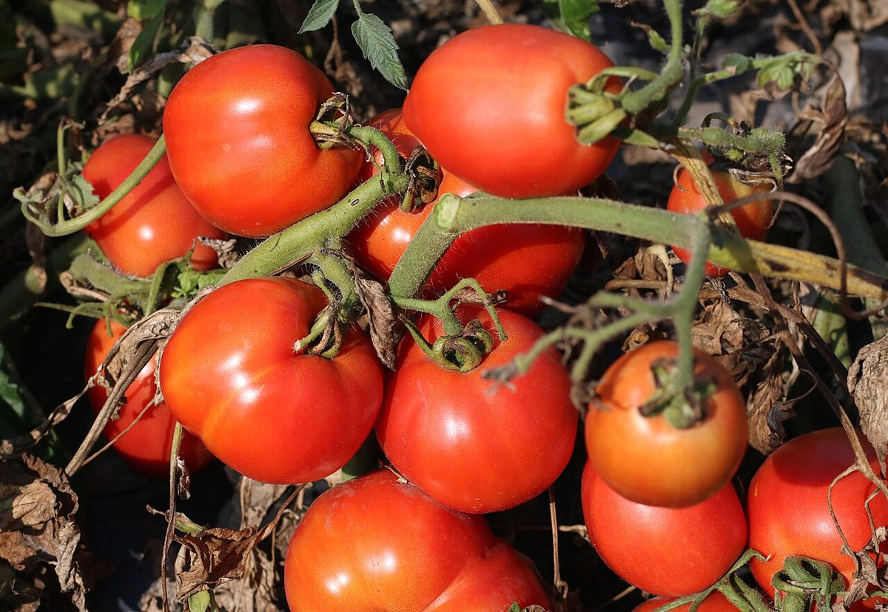

メニューは準備中です(お問い合わせください)
品目や価格などは、現在お伝えできる情報がそろっておりません。くわしくはお電話でおたずねください。Instagramもあわせてご覧ください。



掲載写真はフリー素材のイメージであり、店舗の実際の様子ではありません。他地域で撮影されたものや撮影地が不明なものを含みます。
掲載内容(品目・価格・提供時間)は、準備ができ次第こちらに掲載する想定です。(試作サイトの説明です)
